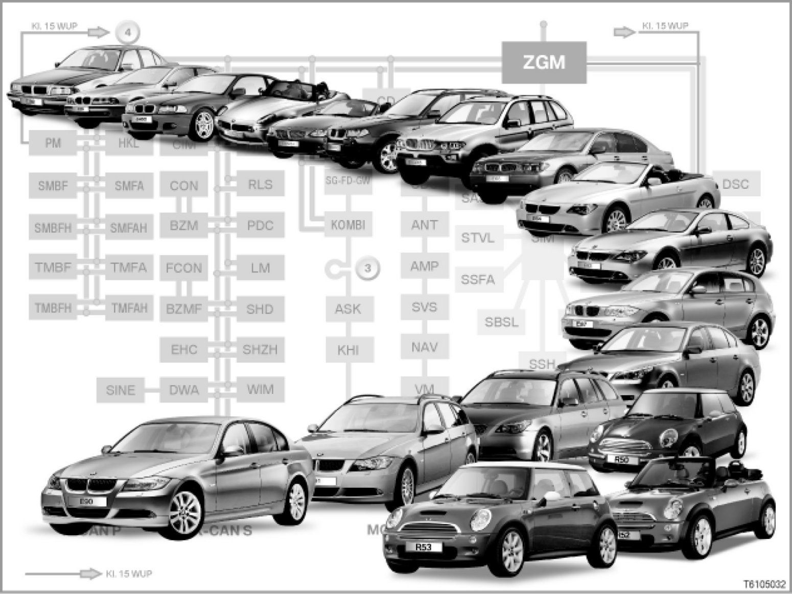

Bus Structures
61 03 05 (144)
Bus structures
All models from E38 and MINI

Introduction
In the vehicles of today, components and control units are networked by means of data buses. Data buses are capable of transmitting messages and signals.
The connected control units only read off those messages and signals that are of relevance to their operation.
Most buses are CAN buses (CAN: Controller Area Network).
A fiber-optic cable is used for navigation and entertainment: The MOST bus (MOST = "Media Oriented System Transport").
It has its own data wire for diagnosis: the diagnostics cable, also known as the "K-line"
[Overview of BMW data buses ...]
This SI Technology bulletin (SBT) contains system overviews of bus structures for the following model series:
- E38 [system overview ...] (7-Series, manufacturing period from 1994 to 2001)
- E39 [system overview ...] (5-Series, manufacturing period from 1995 to 2003)
- E46 [system overview ...] (3-Series, manufacturing period from 1997 to 2005)
- E52 [system overview ...] (Z8, manufacturing period from 1999 to 2003)
- E53 [system overview ...] (X5, manufacturing period from 1999 until 2006)
- E60, E61, E63, E64
> - E60, E61, E63, E64 from 03/07:
> - E60, E61, E63, E64 from 09/05 until 03/07: [system overview ...]
> - E60, E61, E63, E64 from 03/05 until 09/05: [system overview ...]
> - E60, E61, E63, E64 until 03/05: [system overview ...]
- E65, E66
> - E65 and E66 from 03/05: [system overview ...]
> - E65 and E66 from 03/04 until 03/05: [system overview ...]
> - E65 and E66 until 03/04: [system overview ...]
- E70 [system overview ...] (X5, start of series production 2006)
- E83
> - E83 [system overview ...] (X3, start of series production 2004 until 09/06)
> - E83 from 09/06 [system overview ...]
- E85, E86
> - E85 (Z4), start of series production 2002 until 01/06: [system overview ...]
> - E85, E86 from 01/06: [system overview ...]
- E81, E82, E87 [system overview ...] (1-Series, start of series production 2004)
- E90, E91, E92, E93 [system overview ...] (3-Series, start of series production 2005)
- R50, R52, R53 [system overview ...](MINI and MINI Convertible, start of series production 2001)
- R55, R56 [system overview ...] (start of series production 2006)
This SI Technology bulletin (SBT) also contains a section with frequently asked questions.
Note: Abbreviations for control unit names
In the overviews of bus structures, all diagnosis and programming control units are indicated by abbreviations.
The abbreviations used for the control units are listed in alphabetical order and explained in the SI technology bulleting "abbreviations.
and
[for more information, please refer to SI Technology (SBT) 00 01 03 035] Abbreviations All Models
The following control units are numbered:
- Control units that cannot be programmed and cannot be encoded and which do not appear in the quick test.
These control units do not have an abbreviation, just a number.
- Control units with control unit designation from the time before electrical system 2000:
Besides the abbreviation, these control units have a number for entering in the table.
On the history of control unit designations:
Since the start of series production of the E65 (electrical system 2000), the control unit designations have been harmonized. Earlier model series have varying control unit designations.
For technical reasons associated with the system, these control units have not been renamed.
This is because: These control unit designations appear in the quick test on the BMW diagnosis system.
Buses and control units in the E60, E61, E63, E64
In the E60, the K-CAN S and K-CAN P from the E65, E66 have been combined to form the K-CAN.
This means the E60 has the following buses: byteflight (until 09/05), K-CAN, MOST, F-CAN, PT-CAN plus a local CAN (for the engine management system).
The central interface for exchanging data between buses is the safety and gateway module (SGM).
Note: Modifications in the bus structures on the E60, E61, E63, E64 from 03/07
From March 2007, the bus structures are modified as follows:
- The D-CAN is now also integrated:
D-CAN (diagnosis-on CAN) supersedes the previous diagnosis interface in all parts of the world.
- The GWS is now also integrated:
A new control unit has been integrated on the PT-CAN for selecting the drive position in the automatic transmission.
GWS: Gear selector switch
With the gear selector switch, the automatic transmission is no longer actuated mechanically, but rather electronically.
- The TLC is now also integrated:
A new control unit has been integrated on the PT-CAN for the driver assistance system.
TLC: Track lane control
Track lane control supports the driver by vibrating the steering wheel to warn him if the vehicle unexpectedly drifts off of the regular course, prompting him to countersteer.
- The LDM and LRR are also integrated:
With the introduction of active cruise control with stop&go function, 2 new control unit are integrated for cruise control:
LDM: Longitudinal dynamics management
LRR: Long range sensor
The control unit for longitudinal dynamics management (LDM control unit) is connected to the PT-CAN.
The long range sensor is connected to the LDM and the close-range sensors by the new sub-bus. The sub-bus is called the sensor CAN (S-CAN).
> E60, E61, E63, E64 from 03/07: Buses and control units:
Note: Modifications in the bus structures on the E60, E61, E63, E64 from 09/05
From September 2005, the bus structures are modified as follows:
- No byteflight data bus
The SZL control unit is connected to the PT-CAN and no longer to the byteflight.
As before, the SZL control unit is connected to the F-CAN.
Following control units are dropped together with the byteflight:
- SBSL: B-pillar satellite, left
- SBSR: B-pillar satellite, right
- TMBF: Door module, front-passenger
- TMFA: Door module, driver
- ACSM is added.
The crash safety system is controlled by a new control unit:
ACSM: crash safety module
The ACSM control unit is on the K-CAN.
("ACSM" = Advanced Crash Safety Module or Management)
[for further information, please refer to SI Technology (SBT) 65 05 05 138]
- ALBBF and ALBFA are added.
2 new control units for the active backrest width adjustment are added on the PT-CAN.
ALBBF: Active seat back width, front passenger seat
ALBFA: Active seat back width, driver's seat
[for further information, please refer to SI Technology (SBT) 52 02 04 116]
- CA is added.
A control unit for comfort access is added on the K-CAN.
CA: Comfort Access
[for further information, please refer to SI Technology (SBT) 66 04 04 093]
- KGM is added.
As of September 2005, the data interface for the buses is the body-gateway module (KGM). The previous data interface for the buses, the safety and gateway module (SGM) has been dropped.
The following functions are integrated in the KGM control unit:
- Data interface for buses
- Outside door handle electronics
- Vehicle center satellite
- micro-power module
[for further information, please refer to SI Technology (SBT) 61 02 05 143]
- IBS: Intelligent battery sensor
The IBS is connected via the bit-serial data interface (BSD) to the engine control unit. The IBS has been part of the power supply on the BMW 5-Series since start of series production.
[for further information, please refer to SI Technology (SBT) 61 07 03 029]
- FLA is added.
A new control unit for the main-beam assistant is added on the K-CAN:
FLA: Main-beam assistant
[for further information, please refer to SI Technology (SBT) 63 01 05 140]
- For US vehicles: IBOC is added.
For US vehicles, a control unit is added to the MOST for analogue and digital radio reception.
IBOC: Digital tuner US
- For Korea vehicles: KNAV is added.
A control unit for the navigation system is added for vehicle in Korea.
KNAV: Korea navigation system
The KNAV control unit is connected to the MOST.
- A new control unit for the night vision assistant is added on the K-CAN:
NVE: night vision electronics
[for further information, please refer to SI Technology (SBT) 66 02 05 136]
- MPM dropped.
No micro-power module (MPM) on the K-CAN. The KGM control unit performs the functions of the MPM.
- For US vehicles: RDC is added.
For US vehicles, a new control unit added on the K-CAN for monitoring tire pressure has been.
RDC: Tire pressure control
> E60, E61, E63, E64 from 09/05 until 03/07: Buses and control units:
Note: Modifications in the bus structures on the E60, E61, E63, E64 from 03/05
From March 2005, the bus structures are modified as follows:
- AHL discontinued:
From March 2005, the AHL control unit (adaptive headlights) is integrated into the light module. The light module is connected to the K-CAN and the PT-CAN.
- The VTG is now also integrated: For the E60 and E61, an all-wheel drive vehicle is available. The control unit for the xDrive on the E60 and E61 is known as the VTG: Transfer case.
> E60, E61, E63, E64 from 03/05 until 09/05: Buses and control units:
Note: Original version:
Buses and control units on E60, E61 E63, E64 up to 03/05
To support the workshops, the predecessor version of the bus structures on the E60 are also described below:
> E60, E61, E63, E64 until 03/05: Buses and control units:
Buses and control units in the E65 and E66
The main buses in the E65 and E66 are called: K-CAN P, K-CAN S, MOST, byteflight, Local CAN, PT-CAN.
Note: Modifications to the bus structures for the E65 and E66 from 03/05
From March 2005, the AHL control unit (adaptive headlights) is integrated into the light module. The light module is connected to the K-CAN S and the PT-CAN.
> E65 and E66 from 03/05: Buses and control units:
Note: Predecessor version:
Buses and control units on E65, E66 from 03/04
To support the workshops, a description of the predecessor version of the bus structures on the E65 and E66 is also provided:
The key modification compared to the original version of the bus structures on the E65 and E66 is:
SIM and ZGM have been combined to create the SGM. The SGM is the central data interface for all buses and control units.
(SIM: safety and information module)
(ZGM: central gateway module)
(SGM: safety and gateway module)
> E65 and E66 from 03/04 to 03/05: Buses and control units:
Note: Original version:
Buses and control units on E65, E66 up to 03/04
To support the workshops, the original version of the bus structures on the E65 and E66 is also available:
In the original version, the E65, E66 had the two control units SIM and ZGM.
- SIM: safety and information module
The SIM was the data interface for the control units on the byteflight data bus.
- ZGM: Central gateway module
The ZGM is the central data interface for all buses and control units.
> E65 and E66 up to 03/04: Buses and control units:
Buses and control units in the E70
The important buses in the E70 are called: K-CAN, MOST, PT-CAN, F-CAN, FlexRay.
FlexRay is a new communication system that offers extremely efficient, real time data transfer between the electrical and mechatronic components in the vehicle. FlexRay has a data transfer rate of 10 MBit/s.
FlexRay is used for data exchange between the VDM control unit and the shock absorber satellites.
CHAMP: On the US national version, instead of the multi-audio system controller (M-ASK), the Central Headset And Multimedia Platform (CHAMP) operates as the BMW "Professional" radio. In contrast to M-ASK, CHAMP does not have a navigation system.
> E70: Buses and control units [system overview ...]
Buses and control units in E81, E82, E87
The important buses in the E87 are called: K-CAN, MOST, PT-CAN and F-CAN.
The MOST, the innovation in the bus structure on the E65 and E66, is now also used in the E81, E82, E87.
The central interface for data transmission is the junction box electronics (JBE) in the junction box.
> E81, E82, E87: Buses and control units [system overview ...]
Buses and control units on the E90, E91, E92, E93
The most important buses on the E90, E91, E92, E93 are: K-CAN, MOST, PT-CAN, F-CAN.
The new feature is that the footwell module (FRM) is connected to the PT-CAN. This is because:
- The adaptive headlights are integrated into the footwell module. The adaptive headlights need the high-speed PT-CAN.
- The longitudinal dynamics management sends the signal for the brake light on the PT-CAN.
> E90, E91, E92, E93: Buses and control units: [system overview ...]
Buses and control units on the R50, R52, R53
The most important buses on the R50, R52, R53 are: K-bus, PT-CAN.
The central interface for data transfer is the instrument cluster (KOMBI).
> R50, R52, R53: Buses and control units: [system overview ...]
Buses and control units in the R55, R56
The most important buses on the R55, R56 are: K-CAN, MOST, PT-CAN and F-CAN.
The central interface for data transmission is the junction box electronics (JBE) in the junction box.
> R55, R56: Buses and control units: [system overview ...]
Notes for service staff
- General information: ---
- Diagnosis:
- Programming: ---
Subject to change.